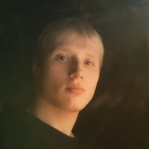

Contacts
- Location: Minsk, Belarus
- Phone: +375 29 65-11-499
- Email: tetrastarz3@gmail.com
- GitHub: tetrastarz3
About Me
I have good interpersonal skills, am an excellent team worker and very willing to learn and develop new skills. I am reliable and dependable and often seek new responsibilities within a wide range of employment areas. I am always open to challenges and constructive feedback. I am open-minded and learn new things quickly. I want to become a team player and dedicate all my skills and talents to develop high-quality and unique products.
Skills
- HTML
- CSS
- GIT
Code Example
function truncate(str, maxlength) {
let newStr;
if (str.length > maxlength) {
newStr = str.slice(0, maxlength - 3) + "...";
return newStr;
}
return str;
}
Education
- University: Belorussian State Pedagogical University, managment in tourism
- Courses: The Rolling Scopes «JavaScript/Front-end. Stage 0»
English
A1 (I had been practicing English at school and at the university)